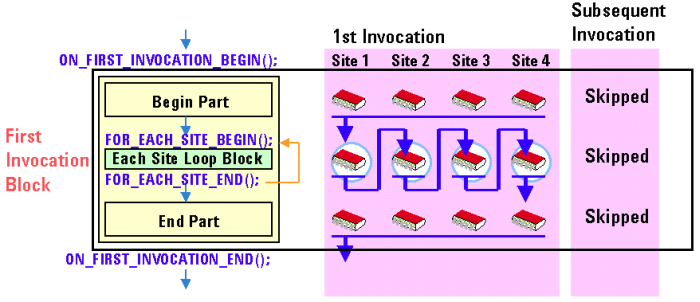

Controlling the Setup/Query-Focus Automatically
You can set up the conditions for each site independently in the first-invocation block. This setup will be performed serially for each site by repetition.
For site-specific setup, Setup APIs need to be enclosed by a pair of the following APIs in the first-invocation block:
The part enclosed by these APIs is called the Each Site Loop Block.
The each site loop block must be in the first-invocation block. The each site loop block will be executed serially for each site by repetition, as shown in the figure below.

To achieve the site-specific setup, the system switches a site in the active sites serially in the each site loop block automatically. This is called "change the setup-focused site". You need to understand this concept for the site-specific setup only.
Therefore, in the each site loop block, setup APIs are executed for the setup-focused site only. Note that the enable and active states of the sites are not changed even if the setup-focused site is changed.
Result APIs in the each site loop block are executed for the site as same as the setup-focused site. In this case, it is called the query-focused site.
Functional changes
- Introduced before SmarTest 6.3.2